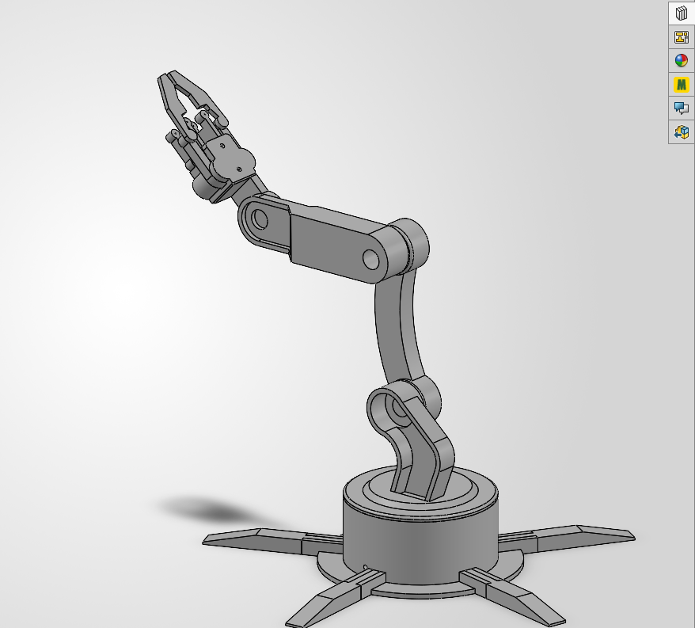

A 6-DOF Arm and the Software That Drives It
Designing a six-axis manipulator, then writing the inverse kinematics that lets you tell it where to go instead of what angle every joint should hold.

The Problem With Joint Control
A servo arm out of the box is controlled one joint at a time. You move a slider, a servo rotates. That works right up until you want the arm to do something useful.
“Pick up the object 20 cm in front of the base” has no obvious translation into six
servo angles. Getting there by nudging sliders is slow, unrepeatable, and easy to get
wrong in a way that drives a link into the base or the table. I wanted to command the
arm in the coordinate space I actually think in — x, y,
z in centimeters — and have the software work out the joint angles.
That means solving the inverse kinematics problem: given a target position for the gripper, find the joint configuration that puts it there. And, just as importantly, recognizing when no such configuration exists.
Mechanical Design
The arm is a serial manipulator: a rotating base, two primary links, and a wrist assembly carrying the gripper. Link lengths are the input the kinematics are built around, so they were fixed in CAD first and measured precisely.
| Segment | Length | Joint | Travel |
|---|---|---|---|
| Base to shoulder | 13.5 cm | Base rotation | 0–180° |
| Upper arm (L1) | 14.0 cm | Shoulder | 80–180° |
| Forearm (L2) | 13.0 cm | Elbow | 50–180° |
| Wrist + gripper (L3) | 12.5 cm | Wrist | 0–180° |
Fully extended, that gives a maximum reach of roughly 39.5 cm from the base axis. The shoulder and elbow travel are deliberately narrower than the servos' full range — those limits come from where the links physically collide, and the software treats them as hard constraints rather than suggestions.
Solving the Kinematics
Rather than reach for a numerical solver, I derived a closed-form solution. For a 3-link planar arm the geometry is tractable, and a closed-form answer is fast, deterministic, and — unlike an iterative solver — tells you immediately and exactly when a target is unreachable.
Step 1 — Collapse the problem to two dimensions
The base rotation is independent of everything above it. Solving it first with
atan2(y, x) reduces a 3D problem to a 2D one in the vertical plane the
arm now lies in, described by horizontal reach r and height
h relative to the shoulder joint.
Step 2 — Hold the gripper level
I wanted the gripper to stay horizontal regardless of arm pose — the natural
orientation for picking objects off a flat surface. Because the wrist segment stays
horizontal, it contributes only to horizontal reach, so subtracting L3
from r gives the position the wrist joint itself has to hit. The two-link
shoulder-elbow problem is then solvable on its own.
Step 3 — Law of cosines
With the shoulder-to-wrist distance d known, the elbow angle falls
directly out of the law of cosines, and the shoulder angle is the sum of the angle to
the target and the interior triangle angle.
# Flatten into the 2D plane, then remove the wrist segment
r = math.sqrt(x**2 + y**2) # horizontal reach
h = z - BASE_HEIGHT # height above the shoulder joint
r_eff = r - L3 # gripper held horizontal
d = math.sqrt(r_eff**2 + h**2) # shoulder to wrist
# Elbow angle — law of cosines
cos_e = (L1**2 + L2**2 - d**2) / (2 * L1 * L2)
cos_e = max(-1.0, min(1.0, cos_e)) # guard float error at the limits
elbow_deg = math.degrees(math.acos(cos_e))
# Shoulder angle — angle to target plus interior triangle angle
phi = math.atan2(h, r_eff)
cos_s = (L1**2 + d**2 - L2**2) / (2 * L1 * d)
psi = math.acos(max(-1.0, min(1.0, cos_s)))
shoulder_deg = math.degrees(phi + psi)
# Wrist compensates to keep the gripper level
wrist_comp = shoulder_deg + elbow_deg - 90
Both cosine terms are clamped to [-1, 1] before acos. At full
extension the arithmetic can land at 1.0000000002 through floating-point error
alone, and math.acos raises a domain error rather than returning the
obviously-intended 0°. Clamping turns a crash at the edge of the workspace into a
correct answer.
Geometry Is Not Servo Angles
The kinematics produce angles in a clean geometric frame — shoulder at 0° means the upper arm is horizontal. The physical servos know nothing about that frame. Each one has its own zero, its own direction of rotation, and a mounting orientation set by how the horn happened to seat during assembly.
I handled this with a set of named offset constants that map geometric angles onto servo commands, and documented the calibration procedure in the source so the mapping can be re-derived after any rebuild:
- Manually position the arm pointing straight forward and horizontal
- Read the servo angles off the sliders in that pose
- Adjust each offset until the IK output matches those readings
Keeping the offsets isolated at the top of the file means a mechanical change never requires touching the kinematics themselves.
Refusing Bad Commands
The most useful thing the controller does is decline to move.
A solution that is mathematically valid can still be mechanically impossible. The solver runs three reachability checks before it computes anything, and a full joint-limit sweep before it returns:
Out of reach
Target further than L1 + L2 from the shoulder — reports the actual maximum reach so the operator knows how far to back off.
Too close to the base
Target inside |L1 − L2|, the dead zone the two links cannot fold tightly enough to enter.
Wrist overshoot
Effective reach goes negative — the horizontal wrist would extend past the target rather than up to it.
Joint limit violation
Every joint checked against its mechanical travel. The error names each offending joint, its computed angle, and its permitted range.
Critically, a violation aborts the entire move rather than clamping the offending
joint. A clamped joint produces a pose that is silently wrong — the gripper ends up
somewhere other than where it was told to go, which is far more dangerous than a
refusal. The solver returns a (result, error) pair where exactly one is
ever populated, so a caller cannot accidentally use a failed result.
The Control Application
The kinematics are wrapped in a Tkinter desktop application that talks to the arm's microcontroller over serial:
- Port auto-discovery — enumerates available serial ports rather than hardcoding one, so it works across machines without edits
- Per-joint sliders — each bounded by that joint's real mechanical limits, for manual positioning and calibration
- Named presets — Home, Pick Up, Drop Off, and Rest, as verified joint configurations rather than coordinates to re-solve
- IK panel — enter a Cartesian target, calculate, review the resulting joint angles, then send. Calculation and transmission are deliberately separate steps
- Background read thread — keeps serial responses flowing without blocking the interface
- Live log — every command and response, timestamped, so a misbehaving move can be traced after the fact
Calculate and send are two separate buttons. The operator sees the joint angles the solver produced and can sanity-check them against the physical arm before anything actually moves. One extra click costs nothing; a surprise full-speed move into the table costs a rebuild.
What I Took From It
Deriving the kinematics by hand rather than pulling in a robotics library meant I had to understand exactly why each term exists — and that understanding is what made the failure modes obvious. The reachability checks aren't defensive boilerplate; they fall directly out of the geometry, and each one corresponds to a specific way the triangle the solver is built on can degenerate.
It also reinforced something the assistive-device work had already taught me: the hardest part of controlling a physical system isn't the happy path. It's the boundary — where the math stops describing something the hardware can actually do, and the software has to notice before the mechanism does.